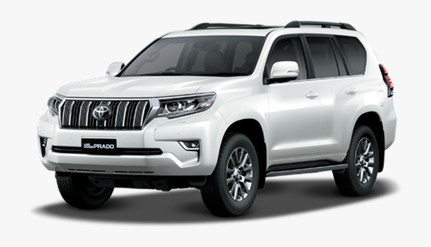
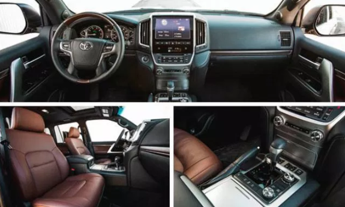

Toyota Land Cruiser Prado 2020 Pictures and Reviews



The 10th Generation Honda Civic introduces a new design language as well as a range of cleaner, more powerful and more efficient engines. Honda Civic 2020 is a front engine, front wheel drive, subcompact sedan also known as Civic X. The Honda Civic 2020 is available in 2 variants in Pakistan 1.8 Litre and 1.8-Liter VTI Oriel while globally it is sold in 4 variants LX, EX, EX-T and EX-L. The Honda Civic 2020 price in Pakistan is between PKR 3,649,000 To 4,599,000.
Honda Atlas has launched Civic Facelift 2020 in Pakistan with new LED headlights, alloy wheels, shark fin antenna, LED fog lights and front chrome strip.
Honda Civic 2020 exterior specifications include a brand new and more aggressive design language. Honda Civic 2020 front end houses sleek HIDs with integrated LED daytime running lights, a trapezium grille integrated into the design of the headlights with chrome accents and triple air intakes. Honda Civic sloping rear end houses aggressively designed angular C-shaped side swept taillights.Options include Modulo kit, door edge guards and door visors.
Honda Civic 2020 exterior specifications include a brand new and more aggressive design language. Honda Civic 2020 front end houses sleek HIDs with integrated LED daytime running lights, a trapezium grille integrated into the design of the headlights with chrome accents and triple air intakes. Honda Civic sloping rear end houses aggressively designed angular C-shaped side swept taillights.Options include Modulo kit, door edge guards and door visors.
Honda Civic 2020 Specs are as follow:
1.5 Litre DOHC 16 Valve Earth Dream Technology Engine 170 bhp_@_5500 RPM, 220 Nm of torque_@_1700
RPM
1.8 Litre SOHC 16 Valve Engine 138 bhp_@_6500RPM, 169 Nm of torque_@_4300 RPM
Toyota Corolla (11th Generation) was launched in Pakistan by the Toyota Indus Motor Company in July 2014. Toyota Corolla 2020 is a front engine front wheel drive subcompact sedan and the most popular model among all its predecessors in Pakistan. Having a variety of different models with an option between 3 engines, 4 transmissions options, and 5 trims levels makes the Toyota Corolla accessible by a broader range of people due to the range of variants to choose from. Toyota Corolla 2020 is available in 4 variants Toyota Corolla XLi, Toyota Corolla GLi, Toyota Corolla GLi Automatic, Toyota Corolla 1.6, Toyota Corolla Altis 1.8 Toyota Corolla Altis CVTi 1.8, Toyota Corolla Altis Grande 1.8 and Toyota Corolla Altis Grande 1.8 CVTi. Toyota Corolla 2020 price in Pakistan is quoted from Rs. 2,519,000 To 3,899,000 which is competitive in the same class models in the market.
Toyota Corolla 2020 Exterior features a brand new more modern and premium design language. The front end houses sleek narrow side swept headlights, a large grille with a chrome accent and a trapezium air intake. The rear end houses sleek sharp side swept taillights, a large rear bumper and a chrome trim piece running the length of the trunk. All variants of the Toyota Corolla 2020 feature almost identical styling. Toyota Corolla exterior has unique design language that allows it to stand out amongst other in its class.
Toyota Corolla 2020 Exterior features a brand new more modern and premium design language. The front end houses sleek narrow side swept headlights, a large grille with a chrome accent and a trapezium air intake. The rear end houses sleek sharp side swept taillights, a large rear bumper and a chrome trim piece running the length of the trunk. All variants of the Toyota Corolla 2020 feature almost identical styling. Toyota Corolla exterior has unique design language that allows it to stand out amongst other in its class.
(Xli,GLi) 1.3 Liter DOHC 16 Valve VVT-I Engine 84 bhp_@_6000 rpm, 121 Nm torque_@_4400
(Altis) 1.6 Liter DOHC 16 Valve Dual VVT-I Engine 120 bhp_@_6000, 154 Nm torque bhp_@_5200
(Altis Grande,Altis) 1.8 Liter DOHC 16 Valve Dual VVT-I Engine 138 bhp_@_6400, 173 Nm torque_@_4000
The 4th generation of Toyota Land Cruiser Prado was launched in 2009. Globally Prado is being offered in 5-door and 3-door versions but in Pakistan only 5-door version is available. The Toyota Land Cruiser Prado 2020 is being offered in 3 versions TX 3.0D(Diesel), VX 3.0(Diesel) and VX 4.0(Petrol). TLC Prado has always been famous in Pakistan. Price of the 4th generation Toyota Land Cruiser significantly increased as compare to the previous generation. Toyota Land Cruiser Prado 2020 price in Pakistan is in the range of PKR 19,399,000 To 38,400,000 which is fairly competitive when compared to other models in the same class.
The bodywork of Prado 2020 has always been great, and there is no doubt anyone can not like the design of Prado. The older models, however, had a strong and bearable body compared to the newer version. If you talk about the latest model, the facelift has completely revolutionized the SUV. The front grille along with the LED lights gives a macho look. The rear of the luxury SUV is also worth praising.
The bodywork of Prado 2020 has always been great, and there is no doubt anyone can not like the design of Prado. The older models, however, had a strong and bearable body compared to the newer version. If you talk about the latest model, the facelift has completely revolutionized the SUV. The front grille along with the LED lights gives a macho look. The rear of the luxury SUV is also worth praising.
Length 4855 mm
Weight 1938 mm
Height 1845 mm
3.0 Liter DOHC 16 Valve Inline-4 Diesel 172 HP @3400RPM
4.0 Liter DOHC 24 Valve Dual VVT-i V6 236 HP @5200RPM

Suzuki Vitara is a crossover / compact SUV introduced globally in 1988 as Suzuki Escudo. Fourth and the latest generation of Suzuki Vitara was revealed in 2014 Paris Motor Show and went on sale in Japan from October 2015. Suzuki Vitara competes with Honda HRV, Nissan Juke, BMW X1, and some other SUVs in Pakistani Market. Suzuki Vitara is available in Pakistan since December 2016. Suzuki has marketed the all new Vitara as ‘The Game Changer.The Suzuki Vitara comes in Pakistan in two variants, GLX and GL+. The Price range for Suzuki Vitara 2020 is Rs. No Price Set
Suzuki Vitara 2020 comes with a stylish exterior that is second to none. It has painted alloy rims, chrome grille on the front, roof spoiler, front and rear door visors, keyless entry, flexible front and rear mud flaps, silver side-body molding and tail lamp garnish.
Suzuki Vitara 2020 comes with a stylish exterior that is second to none. It has painted alloy rims, chrome grille on the front, roof spoiler, front and rear door visors, keyless entry, flexible front and rear mud flaps, silver side-body molding and tail lamp garnish.